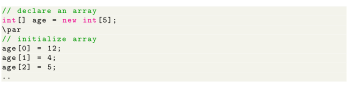

Next: Accessing Elements of an Up: Java Arrays Previous: Java Arrays Contents
In Java, we can initialize arrays during declaration. For example,

Here, we have created an array named age and initialized it with the values inside the curly brackets. Note that we have not provided the size of the array. In this case, the Java compiler automatically specifies the size by counting the number of elements in the array (i.e. 5). In the Java array, each memory location is associated with a number. The number is known as an array index. We can also initialize arrays in Java, using the index number. For example,

Array indices always start from 0. That is, the first element of an array is at index 0. If the size of an array is n, then the last element of the array will be at index n-1.